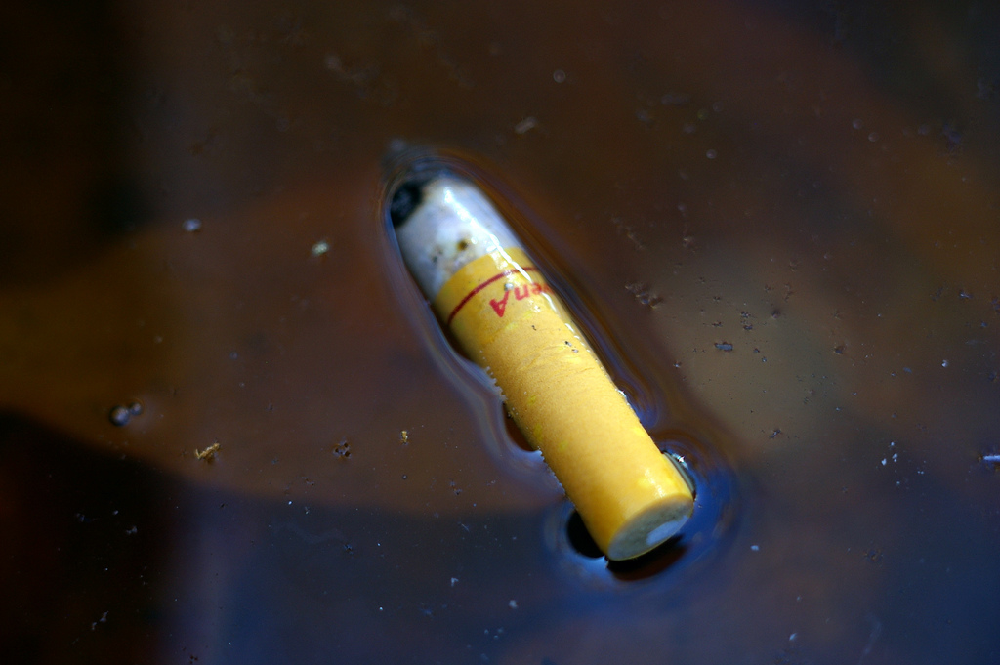
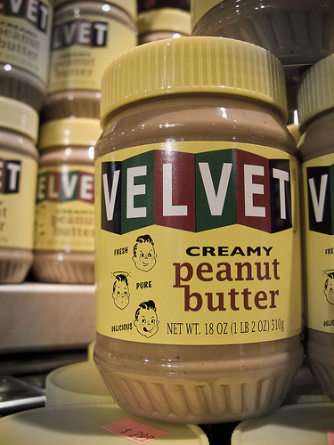

How Cigarette Butt Fishing Isn't as Bad as You Think

Ask the Doctor” where readers ask questions of the world renounced general practitioner Dr. Charles V. Fullerton
Dear Doctor: Do Fish Eat Cigarette Butts. -- Gone Fishing
Dear GF: Yes, fish love cigarette butts. Cigarette butt fishing was a boyhood activity. No need for bait. Dad would just puff out a Tareyton Long Light (100mm. long, but only 9mg of tar) hook the butt like a worm, and we were in business. Charcoal improved the flavor instead of removing it, and fish could get enough.
Photo by fortinbras 
Related posts

help me i am so sick i think i have wet tail
Wet tail is a terrible affliction that can infect your pet hamster or even cartoon mice. Beware the wet tail. …

Why Do People Think Blue Teeth Are a Good Idea?
“Ask the Doctor” where readers ask questions of the world renounced general practitioner Dr. Charles V. Fullerton. Dear Black and…

Peanut Butter Cancer Ban Coming
A new study conducted by Station Park Cancer Hospital has shown that between the years 1973 and 2010 ninety-nine percent…
A Thinker Is Someone Who Has Had to Live with a Hysteric
"Snippets with Racter" quoted from our conversations with the artificial intelligence simulator Racter (authored by William Chamberlain and Thomas Etter;…